만들게 된 과정
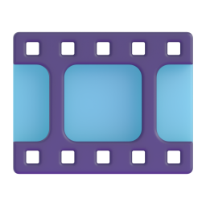
DX LAB 조민혁
AI 영상 빌더 제작기
contentmaker · 만들게 된 과정부터, 써보고 남은 질문까지
AI 영상 빌더란?
AI 툴콜링
AI가 기능을 골라 호출
+
에디터 기능
컷 · 전환 · 자막 · 소리
+
여러 부가 기능
AI를 연결한 세 가지 방식
전체 흐름
멀티에이전트 워크플로우
원문 → 장면 분할 → 이미지 → 음성 → 자막·영상
채팅
툴콜링
AI가 앱 기능을 함수로 호출
버튼
함수 안에서 LLM 호출
버튼 → 함수 → LLM → 결과 적용
스킬에서 GUI로
왜 이걸 하게 되었는가
Claude Code 스킬 = 메인 트리거이자 스케줄러
스킬이 서브 에이전트 워크플로우를 오케스트레이션
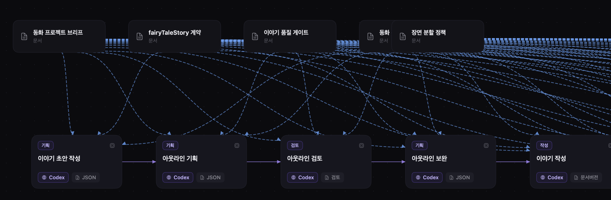
서브 에이전트들이 문서 계약을 받아 이어 달리고, 작업물은 어느 정도 퀄리티가 나오기 시작
작업물
어느 정도 퀄리티가 나오기 시작
그래서
스킬을 감싼 GUI 앱
목적 · 같은 과정의 편한 반복 실행
그때 앱에서 할 수 있었던 것 · 1 / 5
이미지 생성 · 이력 확인
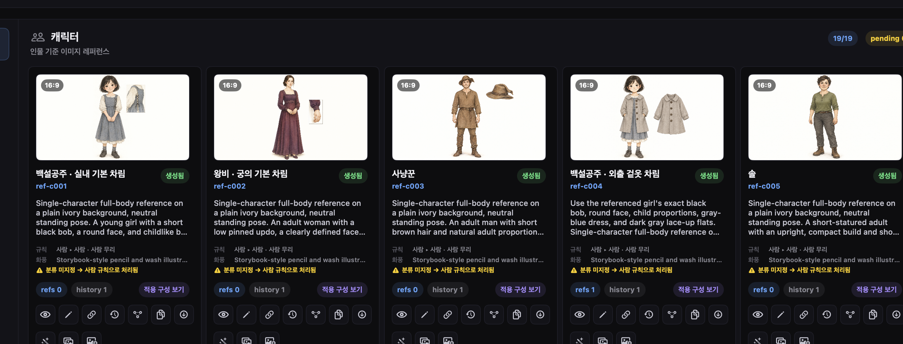
그때 앱에서 할 수 있었던 것 · 2 / 5
동화 본문 생성 · 장면 분할 초벌
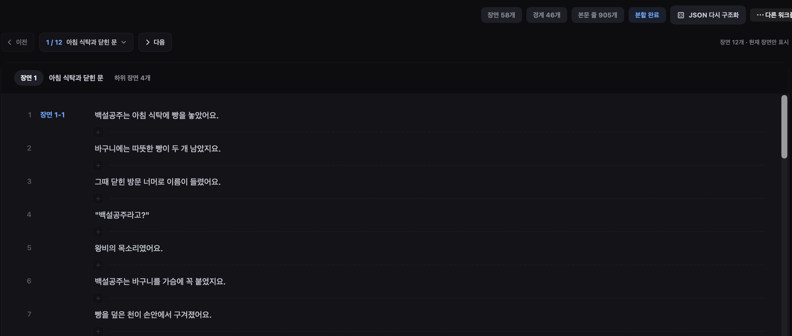
그때 앱에서 할 수 있었던 것 · 3 / 5
버튼으로 음성 생성
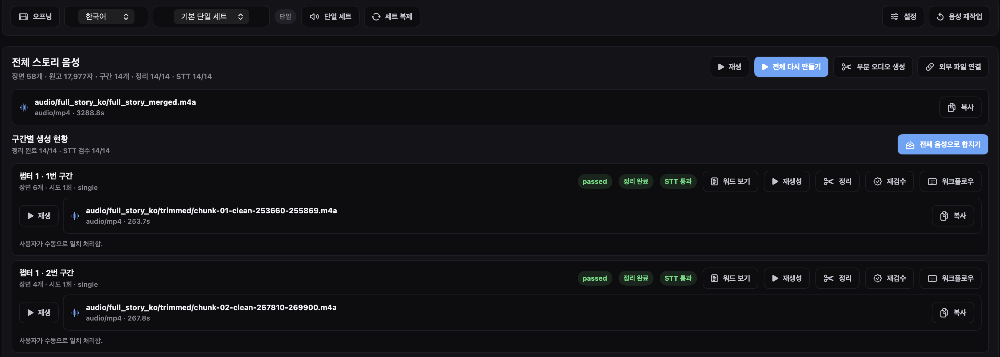
그때 앱에서 할 수 있었던 것 · 4 / 5
STT 자막 → 장면 이미지 결합
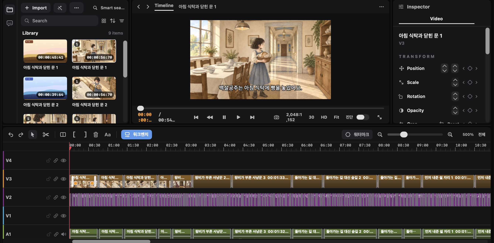
그때 앱에서 할 수 있었던 것 · 5 / 5
결과물 영상 내보내기
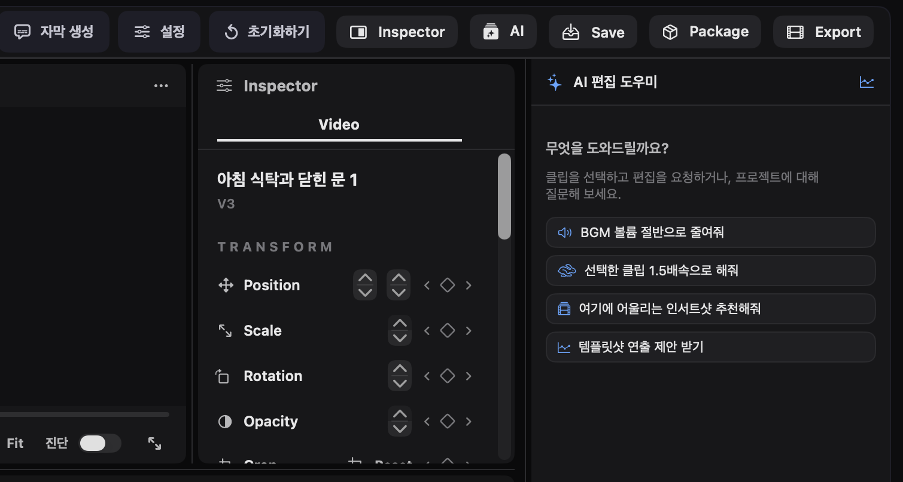
기존 데스크탑 앱의 형식
초기 데스크탑 앱의 구조
GUI
FFmpeg
영상
에디터 UI?
당시엔 도입하지 않음
- 원하는 기능은 비교적 단순
- 별도 에디터 UI까지는 불필요
- 구현 복잡도·공수 부담이 큼
예상
기능이 늘면 편집 엔진이 필요해지겠네
그때는 당장 필요한 기능과 감당할 수 있는 개발 범위에 맞춘 현실적인 타협
다시 에디터를 고민하게 된 이유
요구사항이 늘면서 필요해진 것들
전환
효과음 · 배경음
컷 편집 자동화
클립 길이 조정
이제 에디터 베이스가 필요한가..?
이전에는 단순함을 위해서였다면
이제에디터 도입을 진지하게 고민
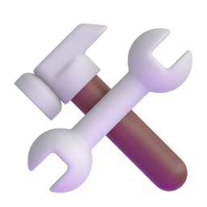
에디터 엔진
이 요구사항을 충족시켜 줄 오픈소스 발견
찾은 것 · Palmier Pro (오픈소스)
스위프트로 만든 네이티브 영상 에디터
GPL 오픈소스 · 편집 코어를 엔진으로 가져와 씀
서비스 로직과 툴콜링
AI 펑션 콜링용 함수
서비스 로직을 스케줄링하고 호출
묶거나 재조합해서 하나의 도구로
에디터의 서비스 로직들
- 클립 분할
- 클립 트림
- 클립 이동
- 클립 삭제
- 클립 삽입
- 미디어 교체
- 속도 변경
- 볼륨 조절
- 페이드
- 자막 텍스트 수정
- 자막 스타일
- 줌 추가
Palmier에는 AI 에이전트(MCP)와 LLM 레이어가 이미 붙어 있었음
영상 에디터에 채팅 UI가 필요한가?
당시엔 완성도가 높지 않음꼭 필요하다고 느끼지도 않음
지금도
채팅 UI의 필요성은 여전히 불확실
가끔은 있으면 편함
어디까지 가능한지 실험해보는 의미로 구현
이 클립 자막 좀 자연스럽게 바꿔줘
어떤 클립을 말씀하시는지 다시 알려주세요…
방금 선택한 거. 3번 트랙 두 번째 클립
1번 트랙의 자막 스타일을 바꿨습니다.
프롬프트를 다듬어 안정성을 높인 뒤에도
자연어 요청,
생각보다 피곤
생각보다 피곤
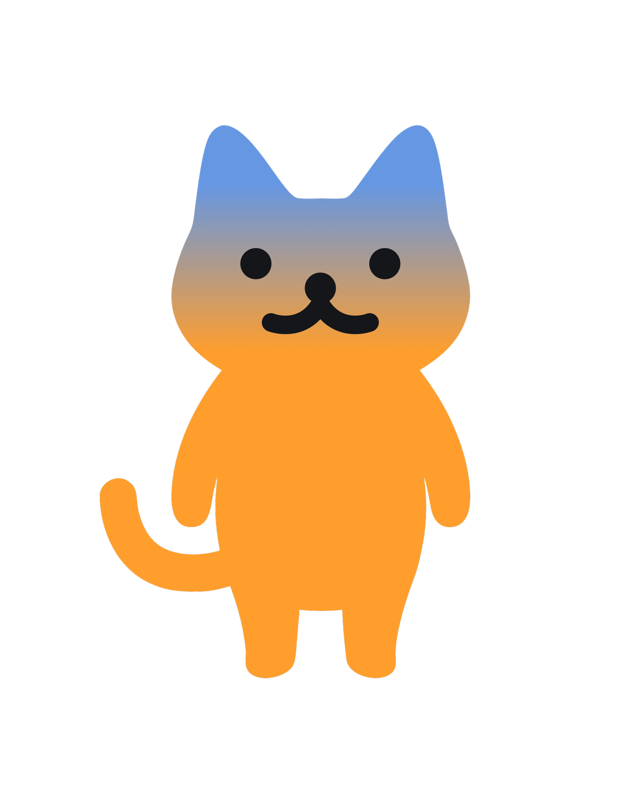
하고 싶은 작업이 정해져 있다면
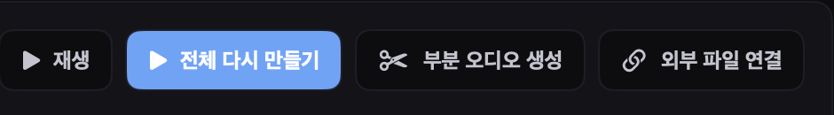
버튼이 더 편함
채팅 UI 별론데?
이 경험을 통해 갖게 된 의문1 / 3
속도가 느림
타이핑 시간 + LLM 호출 대기 시간
2 / 3
명확한 실행 예상 ✕
GUI 도구인 만큼, 원하는 작업을 UI에서 직접 선택해 확실하게 실행하는 편이 나음
3 / 3
구체적인 요청 작성 필요
무엇을 어떻게 바꾸고 어떤 상황에서 어떻게 동작할지 자연어로 하나하나 설명 필요 · 정해진 작업은 버튼이 훨씬 편함
선택 맥락을 연결한 채팅 UI
처음에는 · 앱 전체가 대상
대상을 매번 구체적으로 지정
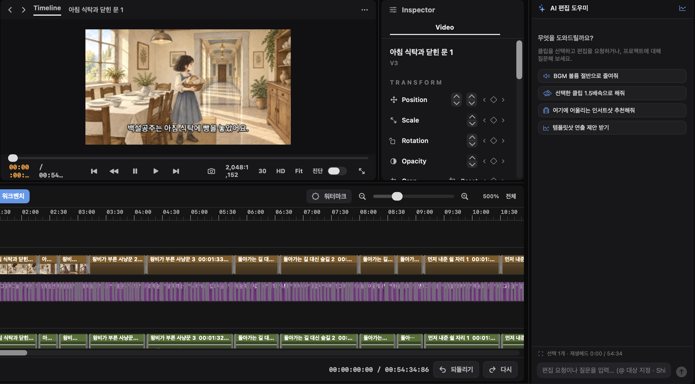
3번 트랙 두 번째 클립 자막을 밝게 바꿔줘
이후에는 · 선택된 클립을 대화의 맥락으로
짧게 말해도 그 클립에 대한 요청으로
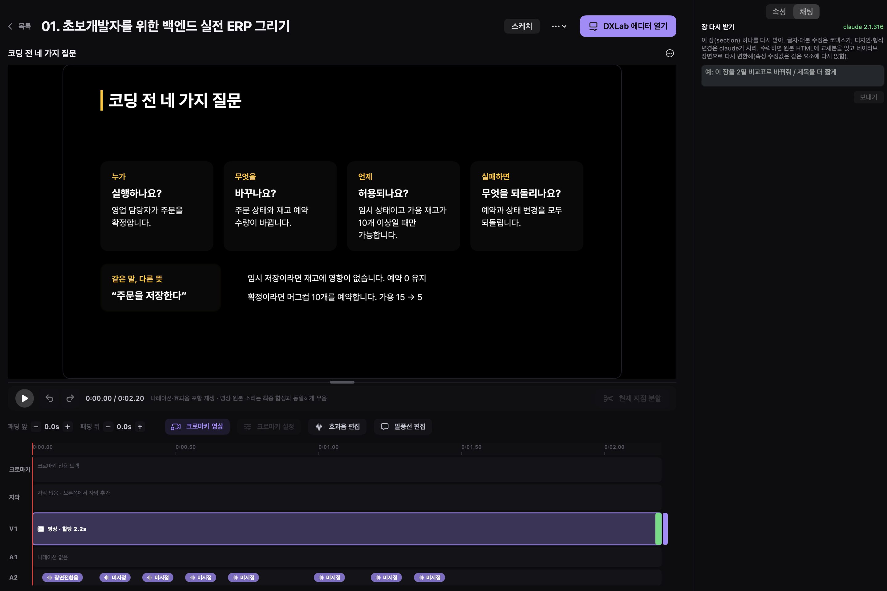
이거 이렇게 해줘
다만
이런 요청은 편함
밝은 테마로 자막 스타일을 바꿔줘
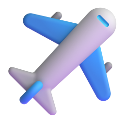
완전 자동화에서 생산성 도구로
처음에 원했던 것
전체 과정을 상당한 수준으로 자동화
쓸수록 보이는, 사람의 개입이 불가피한 지점들
현실적인 이유로 완전 자동화를 포기개발 방향의 변화
완전 자동화
생산성 도구
생산성 도구로 바꾼 이유
사람의 개입은 여전히 꽤 자주 필요
개입 여부에 따른 결과물 차이가 매우 큼
기대 · 1,000m는 알아서 비행
0250m500m750m1,000m
현실 · 60m, 100m마다 다시 던지기
0250m500m750m1,000m
딸깍과 반자동
제작 과정 곳곳에
사람의 판단과 수정이 필요한 지점들
사람의 판단과 수정이 필요한 지점들
- 원문 생성
- 장면 분할
- 레퍼런스 이미지
- 장면 이미지
- 음성 생성
- 자막 생성
사람의 판단이 필요했던 지점 · 1 / 6
원문 생성
판단 · 매끄러운 원문 만들기는 생각보다 어려움 · 어색한 한국어 · 어려운 표현 · 잔인한 내용은 사람이 검토·수정
도움 · AI 채팅으로 생성·수정 지시 · 변경 전후를 비교하는 diff 화면에서 확인 · 추가 수정 요청 또는 직접 수정
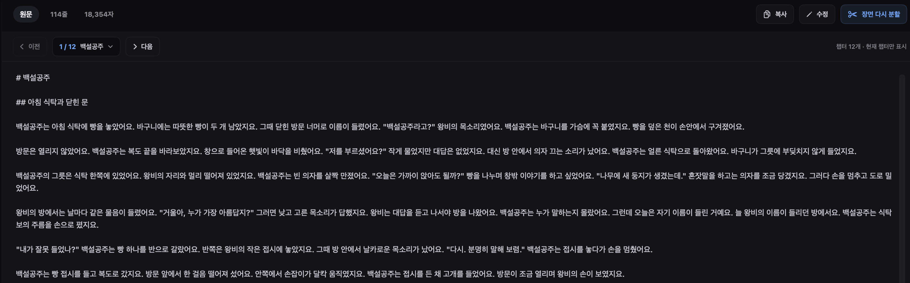
사람의 판단이 필요했던 지점 · 2 / 6
장면 분할
판단 · 어디까지를 한 컷으로 나눌지 세밀한 프롬프트로 초안은 자동 · 그래도 약간의 수작업은 여전히 필요
도움 · LLM이 1차 초안 생성 · 사람은 간단한 토글 UI로 수정·확정
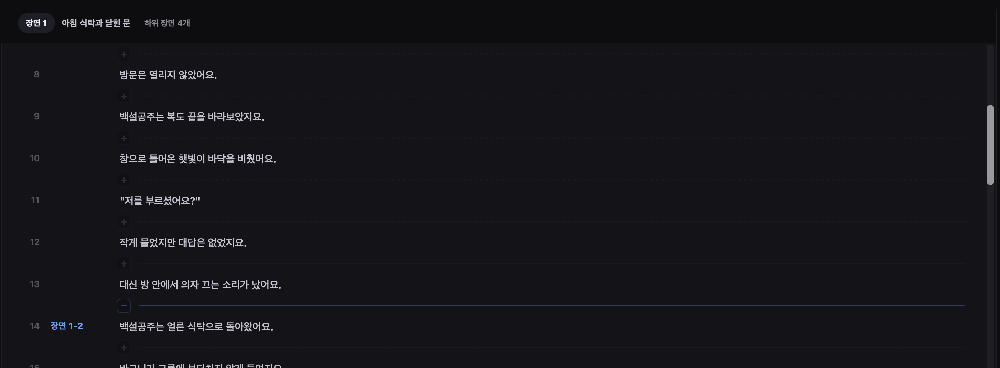
사람의 판단이 필요했던 지점 · 3 / 6
레퍼런스 이미지
판단 · 너무 어리거나 나이 들어 보이고, 의도와 다르거나 매력 부족 · 장면·영상의 기초 에셋이라 판단을 AI에게만 맡길 수 없음
도움 · LLM에게 자연어로 프롬프트 수정 요청 · 이미지 히스토리에서 과거 이미지 다시 선택 · 현재 이미지를 기준으로 수정 요청
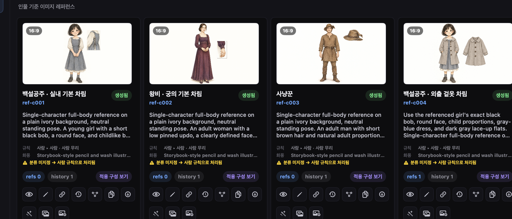
사람의 판단이 필요했던 지점 · 4 / 6
장면 이미지
판단 · 풀샷만 이어지면 지루해 구도 변화 필요 · 잘못 나온 구도를 검토하고 다시 만드는 시간 부담
도움 · 현재 이미지를 기준으로 수정 요청 · 이미지 히스토리에서 다시 선택
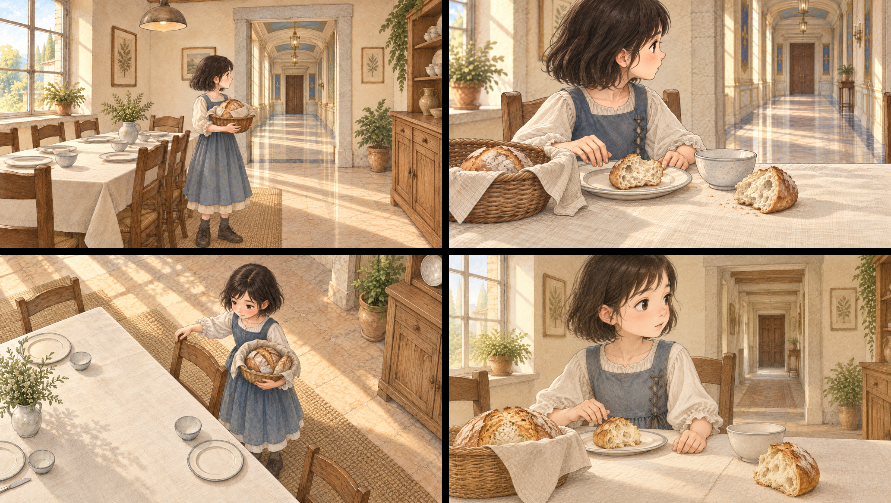
풀샷미디엄하이 앵글클로즈업사람의 판단이 필요했던 지점 · 5 / 6
음성 생성
판단 · TTS로 생성 · 생성된 음성도 사람의 검수 필요
도움 · 긴 글은 자동 분할 생성 후 겹치는 구간 합치기 · STT로 검토 지점 시각화 · 각 이미지에 자동 연결, 필요한 부분만 수정
STT 부분 일치 · 들어볼 것불일치 · 다시 생성
사람의 판단이 필요했던 지점 · 5 / 6
STT 워드 매칭으로 검토 지점 시각화
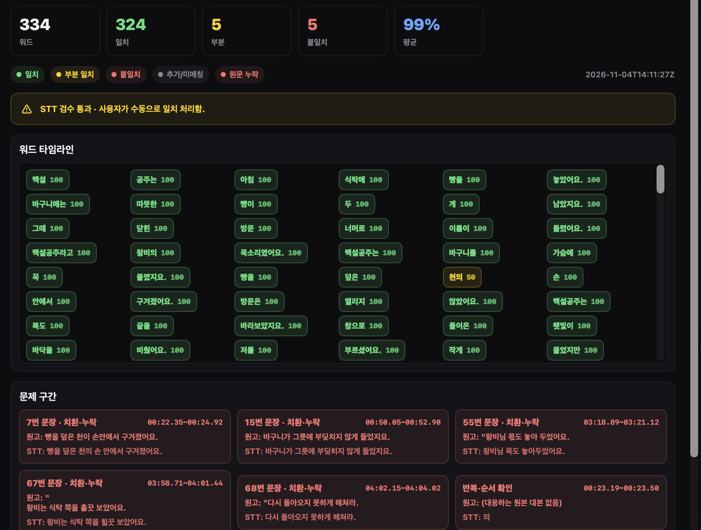
사람의 판단이 필요했던 지점 · 6 / 6
자막 생성
판단 · STT로 생성 후 타이밍에 맞춰 자동 연결 · 최소 한 차례 사람의 검수·수정 필요
도움 · STT로 자막 생성 · 자동 연결
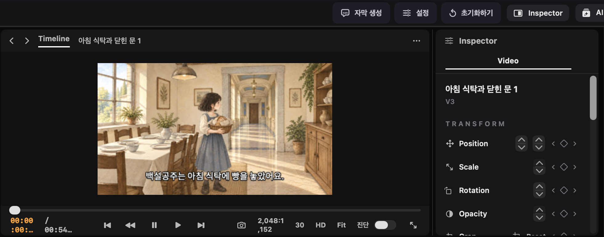
자동화로는 실패, 생산성 도구로는 성공
전체 자동화라는 관점
실패
생산성을 높이는 도구라는 관점
성공
ETC
엔진을 못 썼더라도
직접 구현도 가능했을 것
- 다만 개발은 훨씬 힘들었을 것
- 렌더링 성능도 그만큼 확보하기 어려웠을 것
AX는 업무 프로세스를 다시 만드는 일
이 프로젝트를 하며 AX에 대해서도 생각
완전 자동화
증강
일부는 완전히 자동화할 수 있겠지만, 현실적인 기대치는 사람의 역량과 생산성을 높이는 쪽
어떤 직무를 AX로 바꾸려면
1단계
직무와 실제 업무 프로세스를 깊이 이해
2단계
사람이 할 일 / LLM에게 위임할 일 나누기
3단계
기존 프로세스를 해체해 다시 구성
(직무 재정의, 인력 재배치)
(직무 재정의, 인력 재배치)
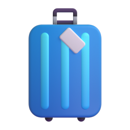
FDE?
일반 파견 형태의 SI에서도
가능할까?
고민해 봐야 할 부분일반 파견 형태의 SI에서도
가능할까?
생산성이 높아지면 어떻게 되는건가?
이런 도구가 업무에 들어왔을 때높아진 생산성으로 할 수 있는 것
더 많은 결과물
같은 사람이
더 높은 품질
같은 시간을 들여
못 해보던 시도
공수가 부담돼 미뤘던 일
더 벌 수 있다면
추가 고용
그게 아니라면
인원 감축
현재 툴에서 할 수 있는 것
지금 이 툴이 하고 있는 일 · 유튜브 영상 편집 · 1 / 3
바스트샷 영상 등록 → 분석
어느 정도 완성된 기능 · 유튜브를 하시는 어머니를 위해
무음 공백 · 컷 편집으로 제거반복 발화 · 검토 후 제거
지금 이 툴이 하고 있는 일 · 유튜브 영상 편집 · 2 / 3
발화에 맞춰 리액션 말풍선 자동 제안
목적 · 톤 · 등장 효과까지 AI가 초안 → 사람이 조정
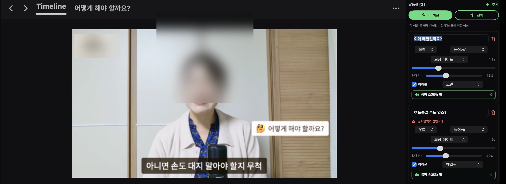
지금 이 툴이 하고 있는 일 · 유튜브 영상 편집 · 3 / 3
설명 구간은 템플릿샷으로 카드형 화면
발화에서 요소를 뽑아 초안 → AI 수정 요청으로 다듬기
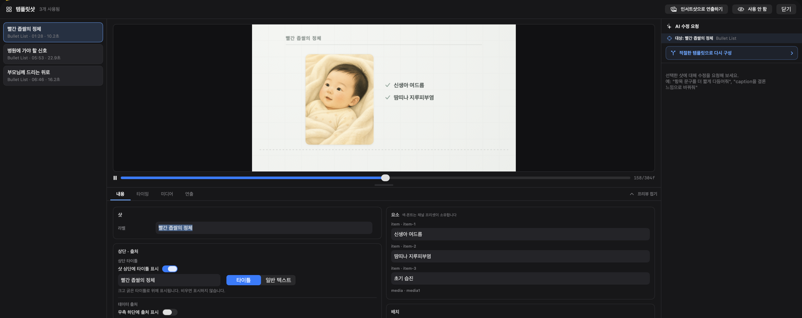
지금 이 툴이 하고 있는 일 · 동화 · 1 / 4
원문 작성 → 장면 분할
AI가 원문을 쓰고 장면 경계 초안을 잡음 · 사람은 토글로 확정
지금 이 툴이 하고 있는 일 · 동화 · 2 / 4
레퍼런스 → 장면 이미지
캐릭터 레퍼런스를 기준으로 장면마다 구도를 바꿔 생성
풀샷미디엄하이 앵글클로즈업
지금 이 툴이 하고 있는 일 · 동화 · 3 / 4
음성 생성 → STT 검토
구간별 TTS 생성 · 워드 매칭으로 검토 지점 표시
지금 이 툴이 하고 있는 일 · 동화 · 4 / 4
에디터에서 결합 → 영상 내보내기
이미지 · 음성 · 자막을 타임라인에 자동 배치 → 내보내기
지금 이 툴이 하고 있는 일 · 슬라이드
슬라이드 구간의 나열 · 그룹 · 구간별 전용 편집 화면
지금 이 툴이 하고 있는 일 · 슬라이드 · 1 / 3
장면 편집 · 구간 전용 타임라인
영상 클립 · 자막 · 크로마키 영상을 그 구간 안에서만
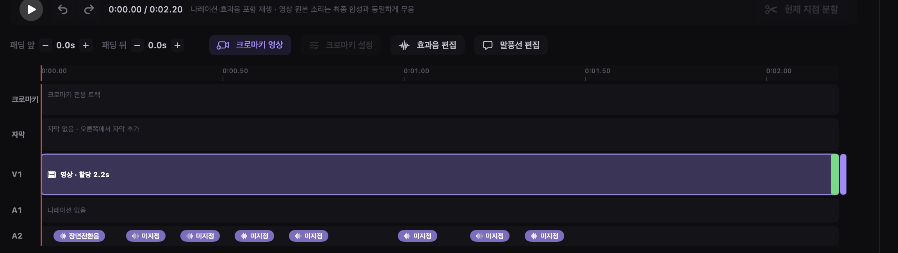
지금 이 툴이 하고 있는 일 · 슬라이드 · 2 / 3
나레이션 · 슬라이드별 대본과 음성
대본을 두고 음성 생성 → 검토 → 음성에 맞춰 자막 시간 정렬
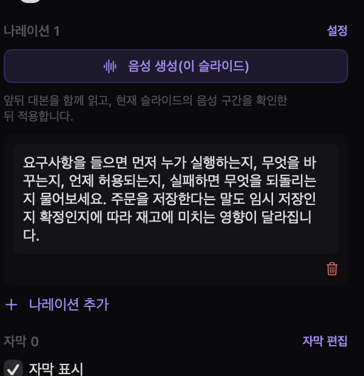
지금 이 툴이 하고 있는 일 · 슬라이드 · 3 / 3
효과음 바인딩 · 역할 마커 → 음원
장면 전환 · 팝 · 클릭 같은 역할에 음원을 지정하면 슬라이드별로 자동 적용
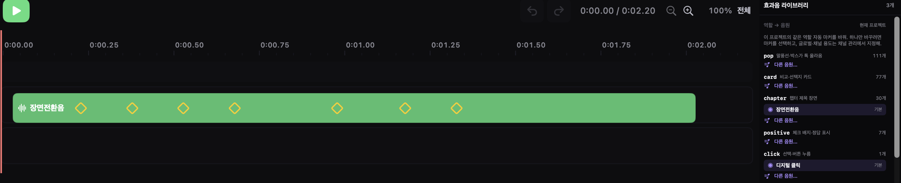
개발 중
숏폼 · 롱폼
씨댄스 2.5 도입도 고려 중그 밖에
화면 녹화 · 여러 실험적인 기능들
AI 영상 빌더를 만들면서 느낀 것들
들어주셔서 감사합니다